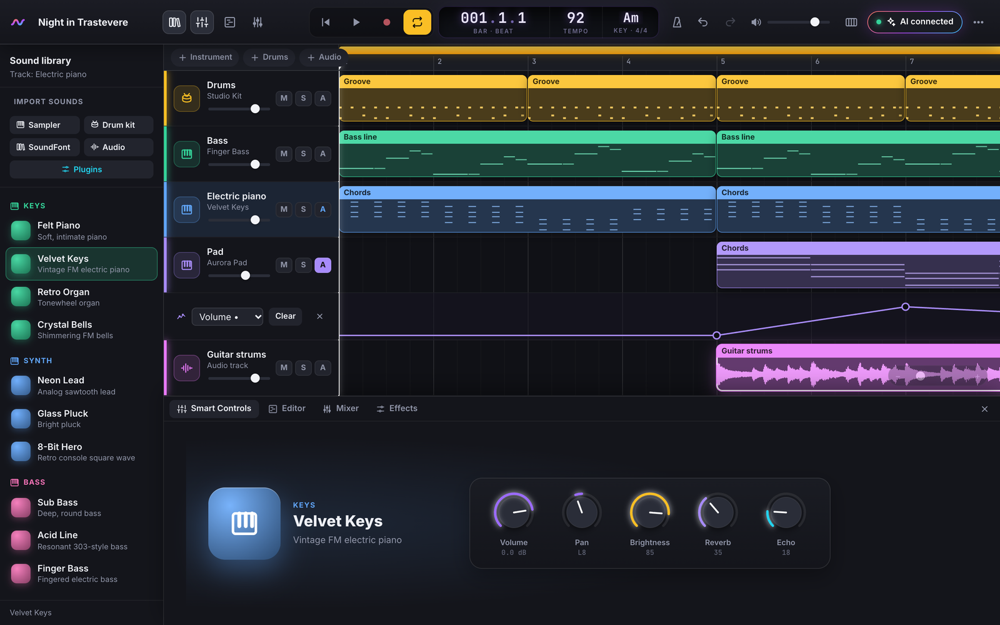

Free · Open source · Built in the open
The music studio everyone builds together
OpenBand is the first open-source DAW that anyone can improve: suggest a feature, follow it on the public roadmap, and play it in the next release. Make music in your browser or on your computer — and let your AI play along.
Free forever · No account · macOS, Windows, Linux · latest

✦“Funk drums, please”Create a part in words
◎−19.8 → −14.0 LUFSMix & master in one gesture
MIT licence
Browser, macOS, Windows, Linux
139 tools for AI apps
English & Italiano
Works offline